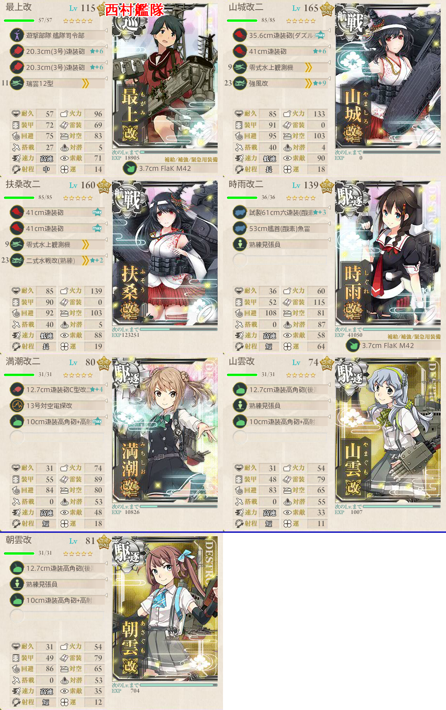
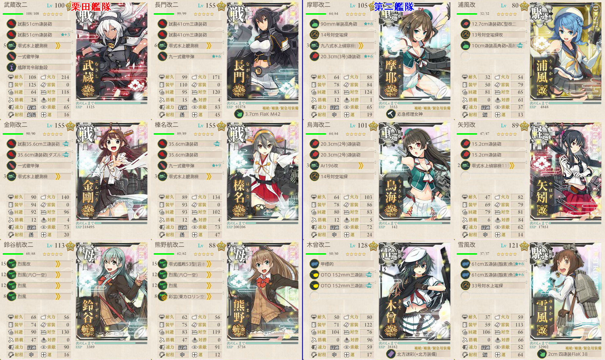

【艦これ】捷号決戦！邀撃、レイテ沖海戦(後篇) E4 サマール沖/レイテ湾
2018年冬イベント E4（乙作戦）
ギミック
- NマスB勝利以上
構成
Nマス
- CFHKMN
- 戦艦2以下 駆逐4以上
- 潜水艦/空母なし
- 西村艦隊

ボスマス
ABEILOQSRX
栗田艦隊（水上打撃部隊）
道中/決戦支援ともに推奨
武蔵4スロ目に水上戦闘機を積むとQやラストダンスのボスで優勢が取りやすくなる

基地航空隊
- 基地への空襲はないので、防空の必要はない
- 2部隊出撃できるので、最大限活用したい
Nマス
- M/Nは夜戦マスのため、F,Hに陸攻を投げておくと良い
ボスマス
陸攻部隊をボス手前に集中する
- 戦艦6とかいう事故狙いの嫌がらせ編成をぶつけてくるので、陸攻フル2部隊をぶつけて黙らせる
場合によってはQマスの制空補助でも良い？
ボスマスは友軍艦隊の支援もあり、陸攻部隊は手前に置いて安定したい
出撃ログ（乙）
Nマス
| 回数 | 編成 | 33式 | ルート | 戦果 |
|---|---|---|---|---|
| 1 | 最上 山城 扶桑 時雨 満潮 山雲 朝雲 | 30.33 | CFHKMN | S勝利（早霜） |
ボスマス
| 回数 | 編成 | ルート | 戦果 | |
|---|---|---|---|---|
| 1 | 第1 | 武蔵 長門 金剛 榛名 鈴谷 熊野 | ABEILOQSR | R 金剛 鈴谷大破 |
| 第2 | 摩耶 浦風 鳥海 矢矧 木曾 雪風 | |||
| 2 | 第1 | 武蔵 長門 金剛 榛名 鈴谷 熊野 | ABEILOQSRX | S勝利（金剛） |
| 第2 | 摩耶 浦風 鳥海 矢矧 木曾 雪風 | |||
| 3 | 第1 | 武蔵 長門 金剛 榛名 鈴谷 熊野 | ABEILOQSR | Q 金剛大破 浦風退避 R 長門大破 雪風退避 A勝利（球磨） |
| 第2 | 摩耶 浦風 鳥海 矢矧 木曾 雪風 | |||
| 4 | 第1 | 武蔵 長門 金剛 榛名 鈴谷 熊野 | A | 矢矧大破 |
| 第2 | 摩耶 浦風 鳥海 矢矧 木曾 浜風 | |||
| 5 | 第1 | 武蔵 長門 金剛 榛名 鈴谷 熊野 | ABEILOQSRX | S勝利（大東） |
| 第2 | 摩耶 浦風 鳥海 矢矧 木曾 浜風 | |||
| 6 | 第1 | 武蔵 長門 金剛 榛名 鈴谷 熊野 | ABEILOQSRX | S勝利（Jervis） |
| 第2 | 摩耶 浦風 鳥海 矢矧 木曾 浜風 | |||
| 7 | 第1 | 武蔵 長門 金剛 榛名 鈴谷 熊野 | ABEILOQSRX | S勝利（飛鷹） |
| 第2 | 摩耶 浦風 鳥海 矢矧 木曾 雪風 | |||
| 8 | 第1 | 武蔵 長門 金剛 榛名 鈴谷 熊野 | ABEILOQSRX | S勝利（妙高） |
| 第2 | 摩耶 浦風 鳥海 矢矧 木曾 雪風 | |||
| 9 | 第1 | 武蔵 長門 金剛 榛名 鈴谷 熊野 | ABEILOQSRX | S勝利（球磨） |
| 第2 | 摩耶 浦風 鳥海 矢矧 木曾 雪風 | |||
| 10 | 第1 | 武蔵 長門 金剛 榛名 鈴谷 熊野 | ABEILOQSRX | A勝利（日向） |
| 第2 | 摩耶 浦風 鳥海 矢矧 木曾 雪風 | |||
| 11 | 第1 | 武蔵 長門 金剛 榛名 鈴谷 熊野 | ABEILOQSR | 金剛大破 |
| 第2 | 摩耶 浦風 鳥海 矢矧 木曾 雪風 | |||
| 12 | 第1 | 武蔵 長門 金剛 榛名 鈴谷 熊野 | ABEILOQSRX | S勝利（利根） ゲージ破壊 |
| 第2 | 摩耶 浦風 鳥海 矢矧 木曾 雪風 | |||
敵編成
Nマス
| マス | 敵航空戦力 | 敵潜水艦 | 備考 |
|---|---|---|---|
| C | あり | なし | 空襲戦 |
| F | なし | あり | 軽巡1 ツ級1 駆逐3 潜水1 |
| H | なし | なし | 駆逐2 PT小鬼4 |
| M | なし | なし | 夜戦 PT小鬼4～5 |
| N | なし | なし | 戦艦4～6 駆逐0～2 |
ボスマス
| マス | 敵航空戦力 | 敵潜水艦 | 備考 |
|---|---|---|---|
| A | なし | あり | 潜水艦のみ |
| E | あり | なし | 空襲戦 |
| I | あり | なし | 空襲戦 |
| O | あり | なし | 軽空母3～4 駆逐2～3 |
| Q | あり | なし | 軽空母3～4 駆逐2～3 |
| R | なし | なし | 連合艦隊 戦艦6 + 軽巡1 ツ級1 駆逐4 |
| X | あり | なし | 連合艦隊 護衛棲水姫 輸送3 戦艦2 + ネ級2 駆逐4 |
| 最終形態 護衛棲水姫壊 軽空母1 輸送2 戦艦2 + ネ級2 駆逐4 | |||